Microsoft AI 的前沿预训练
今年 6 月，我们发布了 MAI-Thinking-1，这是一个在 MAI-Base-1 基础上进行后训练的通用基础模型，具有出色的推理性能。最近，我们完成了新一代最先进模型 MAI-Base-2 的预训练；它是一个 MoE 基础模型，具有 800 亿激活参数和 2.8 万亿总参数。
在我们的留出评测中，MAI-Base-2 的表现优于我们测试的所有开放权重模型。相较于最强的开放基础模型 DeepSeek-V4-Pro-Base，它的预训练 FLOPs 效率高出 4–12 倍（见下文图 3）；我们将节省的计算资源用于训练更大的模型。
图 1 展示了 MAI-Base-2 及其他总参数至少为 1 万亿的模型在一系列预训练评测中的表现（越低越好）。
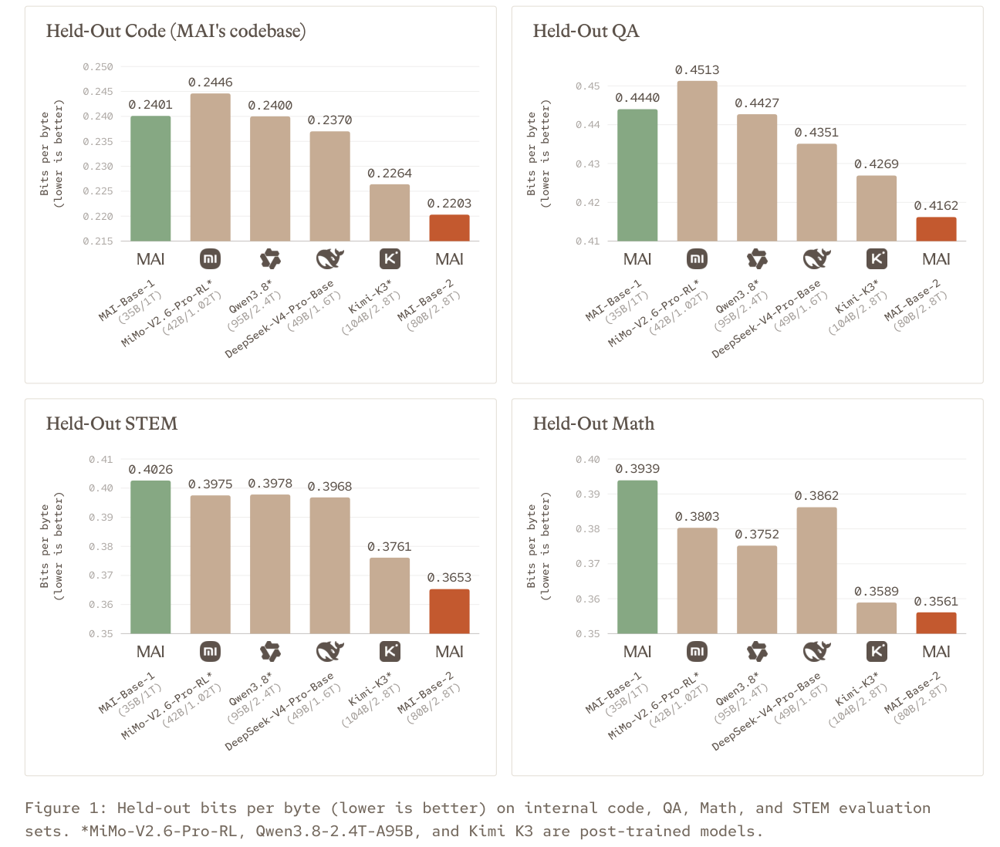
端到端掌握自己的模型流程，使 Microsoft 能够为客户提供独特的产品。Microsoft 能够充分掌握用于模型训练的 token 的数据来源。我们的预训练建立在自然产生的数据之上，不涉及从其他模型进行蒸馏。这将使我们能够通过 Foundry 将模型权重授权给可信赖的合作伙伴，为企业提供可信的世界级智能来源，满足它们的需求。
掌握完整技术栈，使我们能够协同调整模型与基础设施，以最低成本获得最佳性能，先服务于我们自己的产品，再服务于 Foundry 客户。MAI-Base-2 目前正在进行后训练，我们期待很快分享更多结果。
MAI-Base-2 的对比表现
完成 MAI-Base-1 的训练后，我们的预训练发展路径十分明确：扩大规模。虽然 MAI-Base-1 就其规模而言是一个强大的模型，但它的规模小于前沿的开放权重模型和专有模型。
以下三项举措对 MAI-Base-2 的成功预训练尤为重要：
- 规模扩展科学：考虑训练数据重复使用的规模阶梯，以及经验性的超参数 scaling laws。
- 模型与基础设施协同设计：改进 MoE 和 Muon 实现，并引入激活 gradient 裁剪。
- 扩大数据规模：扩展数据处理流程，并整合视觉数据。
MAI-Base-2 比 MAI-Base-1 更大、更稀疏，使用了更多数据进行训练。我们于 2026 年 8 月和 9 月使用 16k 个 GB200 GPU，历时 38 天训练了 MAI-Base-2。在整个训练过程中，平均 MFU（模型 FLOPs 利用率）为 21%，goodput（训练实际取得进展的时间占比）为 89%。我们的 MFU 以 2.5 PFLOPS（GB200 在 BF16 下的理论峰值）为基准进行归一化，不包含重计算和优化器的 FLOPs。
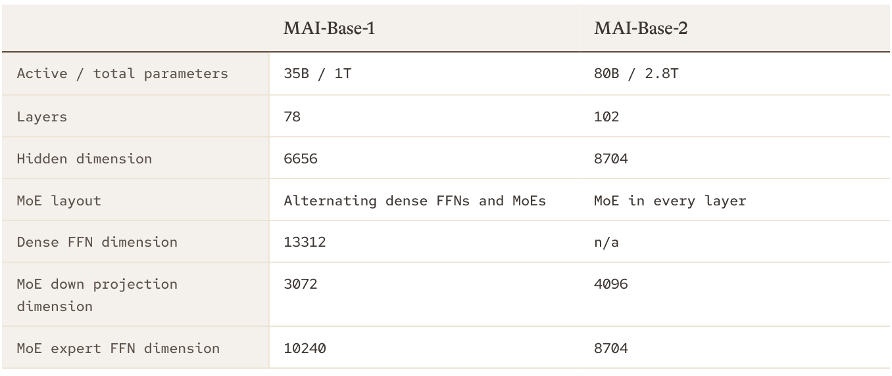
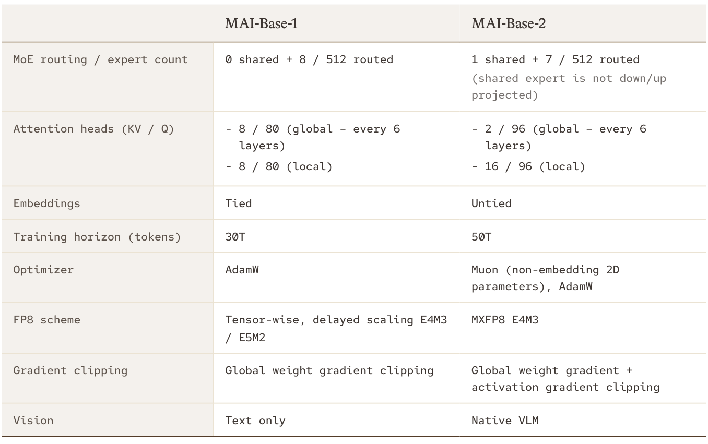
我们使用每字节比特数（BPB）在留出文本上比较预训练模型，这一指标不依赖于各模型的 tokenizer。对于留出代码，我们使用 MAI 自己的代码库；STEM、数学和问答评测则委托供应商制作，以降低训练集污染的风险。此外，我们还将所有评测集与训练数据进行比对，执行了去污染处理。
我们将 MAI-Base-2 与 2026 年 10 月之前可获得的前沿 checkpoint 进行比较：
- DeepSeek-V4-Pro-Base 是能力最强的开放权重基础模型。
- Kimi K3、Qwen3.8-2.4T-A95B 和 MiMo-V2.6-Pro-RL 都是能力很强的开放权重模型。这些模型仅提供后训练 checkpoint。我们报告其结果，同时提醒：后训练可能影响这些评测。
在这些留出评测中，MAI-Base-2 的 BPB 均低于我们测试的其他模型。下面，我们将深入介绍促成这一结果的几项进展。
稳健的规模阶梯
我们使用规模阶梯评估模型改动，即一组采用固定训练方案、规模各异的模型。阶梯的每一级以层数 \(L\) 命名，仅由 \(L\) 就能确定其余架构。例如，隐藏维度为 \((256/3)\times L\)，query 头的数量为 \(L\)，取整至最接近的 16 的倍数。我们（接续下一页）
（接续上一页）在保持每个激活参数对应训练 token 数（TPP）不变的情况下，训练规模逐步增大的模型。
为了考虑小规模模型的多轮训练，我们采用一种称为 source scaling 的技术。在规模阶梯的较低级别，source scaling 人为限制模型训练时使用的独立样本集合，使得无论训练的总 token 数是多少，每个数据集都重复相同的次数。例如，如果一个数据集在完整的 50T-token 训练中重复 8 次，那么一次 5T-token 的训练就会只使用该数据的 1/10，并循环 8 次。
在 TPP 固定的情况下，source scaling 实际上保持了独立数据量与参数量之比不变，有助于确保结果在不同规模间平滑迁移。如果不采用 source scaling，较小规模的实验可能倾向于选择正则化不足的架构和超参数，而这些选择会在更大规模下过拟合。将 source scaling 纳入规模阶梯，是可靠地扩展至 2.8T 参数模型的关键。图 2 展示了如何利用规模阶梯准确预测 MAI-Base-2 的性能。
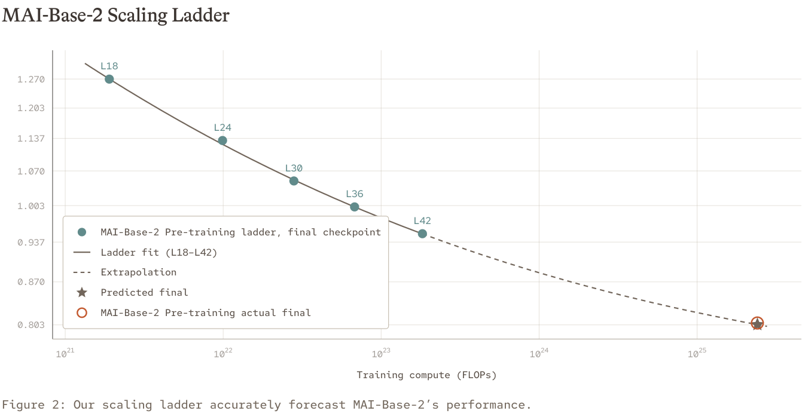
将建模效率与计算量区分开来
直接比较模型，会将训练方案的质量与模型规模和训练计算量的差异混在一起。为了单独考察训练方案，我们估算采用我们的方案需要多少计算量，才能达到一个强大的外部基础模型的水平。我们以 DeepSeek-V4-Pro-Base 为参照：它是唯一已发布、参数超过一万亿的基础预训练 checkpoint，尽管其训练 FLOPs 仍显著少于 MAI-Base-2。
对于图 1 中的四项留出评测，我们分别拟合 BPB 与训练 FLOPs 之间的 scaling law，并估算我们的规模阶梯上的模型需要多少计算量才能达到 DeepSeek-V4-Pro-Base 的 BPB。MAI-Base-2 的最终性能已知，我们将其纳入拟合，因此匹配点位于拟合模型覆盖的范围内，而非范围之外。将这些估计值与 DeepSeek-V4-Pro-Base 的训练计算量比较，我们发现，（接续下一页）
（接续上一页）我们的方案在 FLOPs 效率上高出 4.2–12.3 倍，如图 3 所示。我们也与 MAI-Base-1 进行了比较，发现自今年 6 月发布该模型以来取得的进展，带来了 6.3–12.7 倍的 FLOPs 效率提升。我们将 MAI-Base-2 的 FLOPs 效率归因于数据的质量与相关性，以及建模选择带来的效率收益；这两方面将在下文介绍。
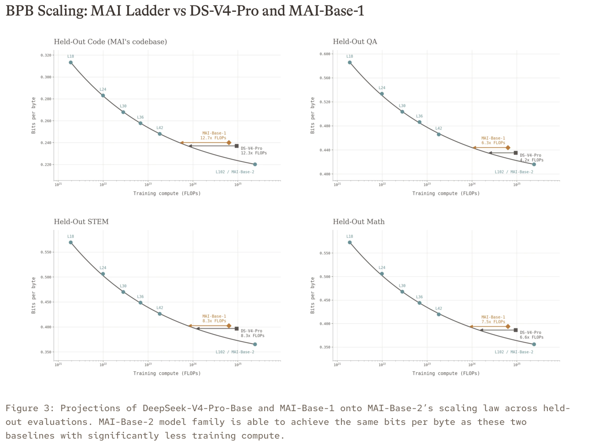
超参数的 scaling laws
大型训练任务的最优超参数选择会受到超参数优化组合空间的影响，因而相当复杂：改变一个超参数，可能影响其他超参数的最优值。对于 MAI-Base-2，我们重新审视了解决这一问题的方法。
我们联合扫描学习率 \(LR\) 和权重衰减 \(WD\)，因为它们对训练的影响彼此耦合。模型性能对 \(LR\) 与 \(WD\) 的乘积最为敏感，因此好的配置位于 \((\log LR,\log WD)\) 平面上一个狭窄的对角带内。在 \((\log LR,\log WD)\) 中使用矩形网格，会低效地采样这个带状区域，因此我们改为扫描 \((\log LR,\log(LR\times WD))\) 中的网格。
对于若干模型规模和 TPP 的组合，我们沿着搜索网格训练模型，并在预训练评测中进行评估。我们对评测结果拟合二维二次函数，并解析求得最小值点 \((LR^*,LR^*\times WD^*)\)。图 4 展示了这一实验的几个切片。
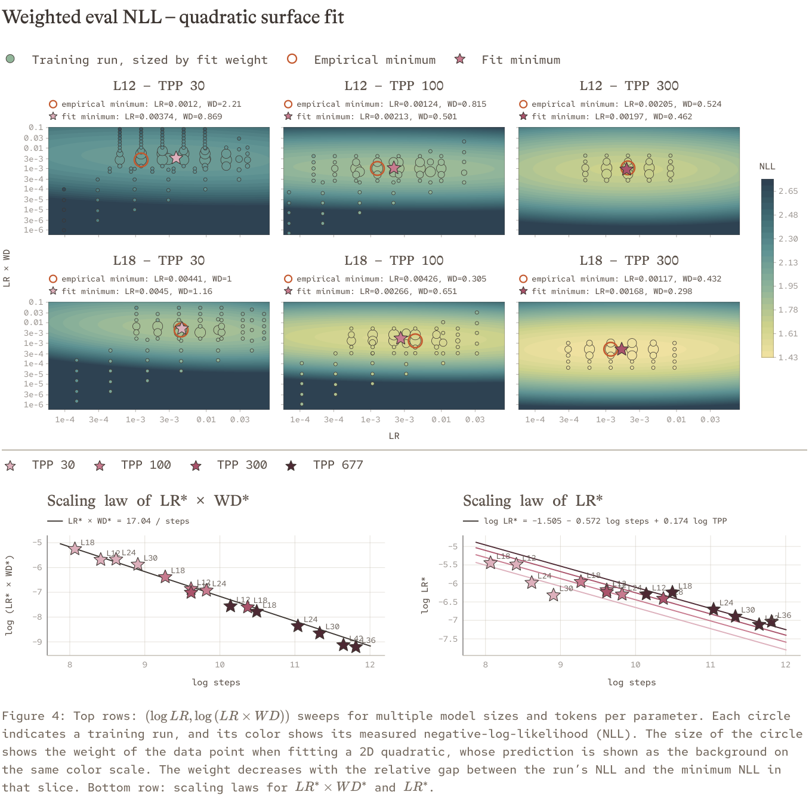
随后，我们将 \(\log(LR^*\times WD^*)\) 和 \(\log LR^*\) 建模为模型规模、TPP 或其他特征（如步数的对数）的函数。通过模型选择，我们发现 \(LR^*\times WD^*\) 主要取决于训练步数，而 \(\log LR^*\) 还额外依赖 \(\log TPP\)。\(LR^*\times WD^*\) 相对于步数的经验指数非常接近 −1，这与以下观点一致：解耦权重衰减的时间尺度 \(\left(\frac{1}{LR\times WD}\right)\) 应当是训练总时长的一个固定（接续下一页）
（接续上一页）比例。LR 相对于步数的经验指数接近 −0.5，这与广泛使用的经验法则一致：batch 大小翻倍时，学习率应乘以 \(\sqrt{2}\)。我们最终得到的 \(LR^*\) 和 \(WD^*\) 的 scaling laws 为：
通过类似的方法，我们还推导出以下 dropout 的 scaling law：
我们在小规模实验中估算出这些新的 scaling laws，随后在中等规模上进行了验证，它们始终优于之前的启发式规则。这些规律确定了 MAI-Base-2 的超参数。
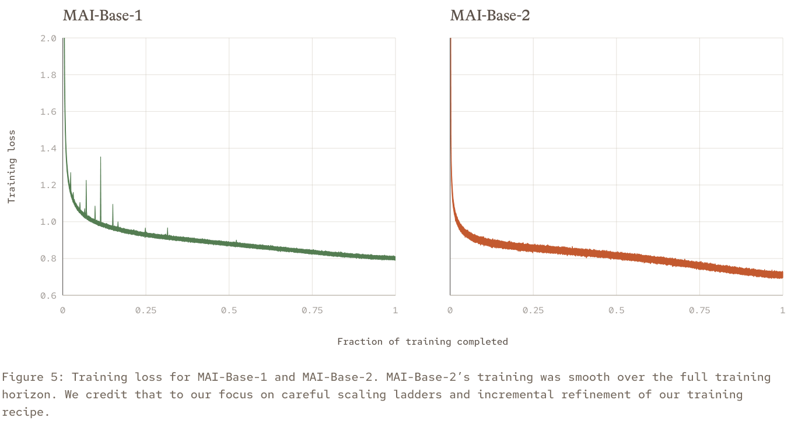
协同设计基础设施与 MAI-Base-2
在给定计算预算内训练前沿模型，需要协同设计模型与基础设施，同时兼顾评测质量和计算效率。我们使用效率增益（EG）指标辅助决策：候选方案达到与基线相同评测损失所需计算量的比值。计算量可以用 FLOPs（\(EG_{\mathrm{FLOPs}}\)）或实际运行时间（\(EG_{\mathrm{time}}\)）衡量，两者相辅相成。我们主要依赖 \(EG_{\mathrm{time}}\)，因为它（接续下一页）
（接续上一页）反映了基础设施的当前状态。另一方面，\(EG_{\mathrm{FLOPs}}\) 衡量原型的潜力，并为未来的基础设施开发提供指导：如果一项改动在 FLOPs 上有优势，但在实际运行时间上落后，就能告诉我们应当在哪些地方投入资源。这种对建模和基础设施的联合优化，体现在下面的若干设计选择中。
扩展 MoE
我们过去的建模实验表明，每层都使用 MoE 相比交替使用稠密 FFN 层和 MoE 层，始终具有 \(EG_{\mathrm{FLOPs}}\) 优势。然而，我们的 MoE 实现效率不足，使得每隔一层使用 MoE 在 MAI-Base-1 上取得了最优的 \(EG_{\mathrm{time}}\)。针对 MAI-Base-2，我们发现了两项导致 MoE MFU 未达最优的低效因素：
- 动态路由增加了内存碎片，并为罕见的极端专家负载不均衡占用了更多内存；这些内存本可用于减少激活重计算。
- 增加更多、更细粒度的专家，提高了每个专家的开销。
解决这些低效问题，将 MoE 层的 MFU 从 24% 提升到了 35%，使我们能够在 MAI-Base-2 的每一层中采用 MoE。
内存使用量可调且固定、不丢弃 token 的 MoE
在 MoE 层中，每个专家接收的 token 数量各不相同。这会带来 GPU 内存方面的挑战，因为过载的专家可能耗尽内存。一种解决方法是为每个专家设置固定阈值，超出阈值的 token 将被丢弃。我们的实验发现，丢弃 token 会降低性能。一个简单的解决办法是，为每个专家分配足以应对最大负载不均衡的内存，但这会导致正常负载下的内存使用效率低下。我们的多轮次、不丢弃 token 的 MoE 如图 6 所示，能够在任意路由不均衡条件下保持固定内存用量，消除内存碎片和内存不足崩溃。
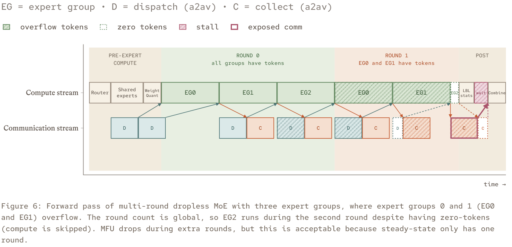
我们将每个专家并行 rank 上的专家，按可配置的组大小分成一个或多个组。每个专家组执行一轮或多轮 dispatch → compute → collect，每个专家具有固定的 token 容量。如果一个专家收到的 token 超出其容量，专家组会在额外轮次中处理这些溢出的 token。为了减少额外轮次，我们允许过载专家使用同组其他专家尚未使用的 token 容量。在反向传播中，我们遵循类似的多轮调度，对每个专家组执行细粒度重计算。这使内存用量不随 token 不均衡程度而变化。token 容量可以配置：容量越大，所需内存越多；容量越小，可能需要更多轮次，从而带来额外计算。实践中，我们将容量配置为在稳态下维持单轮执行。
所有专家组的所有轮次中的 dispatch、compute 和 collect 都采用流水线执行，因此除了第一次 dispatch 和最后一次 collect，其他操作都与专家计算重叠。在前向传播中，权重量化和共享专家计算与未被隐藏的通信重叠。在反向传播中，所有专家通信都完全重叠：未被隐藏的输入 dispatch 与同一层的重计算重叠，未被隐藏的 gradient collect 则与权重 gradient 计算重叠。
降低每个专家的开销
我们从四方面降低每个专家的开销。第一，将每个专家组的计算和通信分别合并，以提高 GEMM 和 NVLink 效率。这减少了 kernel 启动开销和尾部效应。第二，使用驻留在设备上的 token 元数据，并直接从 GPU 发起 all-to-all 通信，以减少主机与设备之间的同步。第三，进一步使用对称内存优化 all-to-all，直接通过 NVLink 交换 token，无需中转拷贝，从而提高通信吞吐量，并减少并发执行 GEMM 时的 HBM 争用。最后，我们将各层的负载均衡损失批量处理，用一次跨全部层的批量归约替代逐层 all-reduce。这些优化使我们能够训练更稀疏的模型，而不显著降低 MFU。
扩展 Muon
在扩展到 MAI-Base-2 时，我们发现，相较于 AdamW，Muon 带来了更稳定的训练动态和显著的效率提升。要在我们最大的模型上采用 Muon，就需要降低其每一步的开销。
Muon 使用 Newton–Schulz 对每个权重矩阵的动量进行正交化；这是一种由多次矩阵乘法组成的迭代算法。这需要完整的矩阵，与 ZeRO 沿数据并行维度对动量进行分片相冲突。遵循先前工作，我们在优化器步骤中对动量重新分片。每个 GPU 更新本地 FP32 动量分片，并将其转换为 BF16。随后，将相同形状的参数批量执行 all-to-all 交换，使每个 GPU 持有一部分完整动量矩阵。每个 GPU 使用考虑对称性的 Newton–Schulz kernel，在本地对其完整动量矩阵进行正交化。第二次 all-to-all 将更新返回其原始分片，在那里再转换回 FP32，并应用到权重上。
我们还实施了几项有利于 16K GPU 训练效率的优化：
- 通过预取多个 batch，使通信与计算重叠。
- 缓存并复用重新分片的元数据，避免重复的索引逻辑。这对于包含数千个形状相同参数的稀疏 MoE 模型尤其有用。
- 对于某些权重，例如 MoE 路由器权重，我们在 GPU 间复制，而不是分片。此时跳过第一阶段通信，改为在 Newton–Schulz 之后执行一次 all-gather 集合通信，以获得完整的复制更新集合。
优化后，Muon 占 MAI-Base-2 平均训练迭代时间的 2.1%（165 ms）。我们同时使用大规模和小规模测试环境，跟踪实现质量，并根据性能剖析结果确定改动优先级。我们将测试测量结果与理论峰值性能进行比较；对于 MAI-Base-2 的最终训练配置，我们估计理论耗时为 55 ms，瓶颈在于通信。我们将理论性能与实测性能的差距归因于慢执行者、kernel 调度开销、负载不均衡，以及重新分片过程中的内存拷贝和分配。
激活 gradient 裁剪
gradient 裁剪是一种常用的稳定训练方法，通过减小 outlier gradient 的影响来发挥作用。标准的 gradient 裁剪针对整个 batch 的权重 gradient 的全局范数进行操作。然而，outlier gradient 通常由一个 batch 内很小一部分数据引起。因此，一个 outlier 就可能使整个 batch 的 gradient 都被缩小，其中包括其他表现正常的样本所贡献的 gradient。作为更有针对性的缓解措施，我们在网络中选定位置裁剪激活的 gradient。这与 Muon 相结合，使 MAI-Base-2 的 gradient 范数保持在比 MAI-Base-1 窄得多的范围内（图 7）。
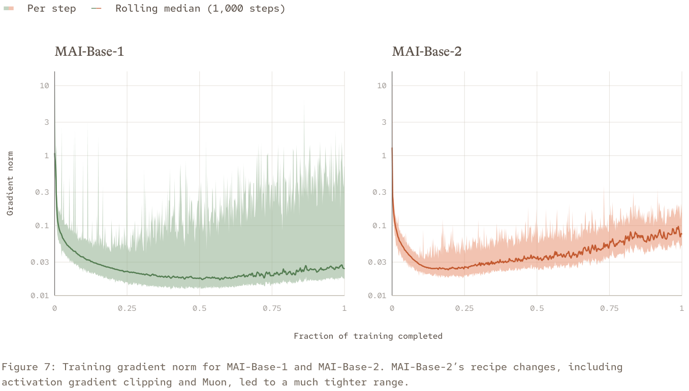
激活 gradient 裁剪还使优化更加稳定，并且其收益随着规模增大而增加，如图 8 所示。相比之下，我们测试的大多数改动在不同规模上带来的效率增益大致恒定。
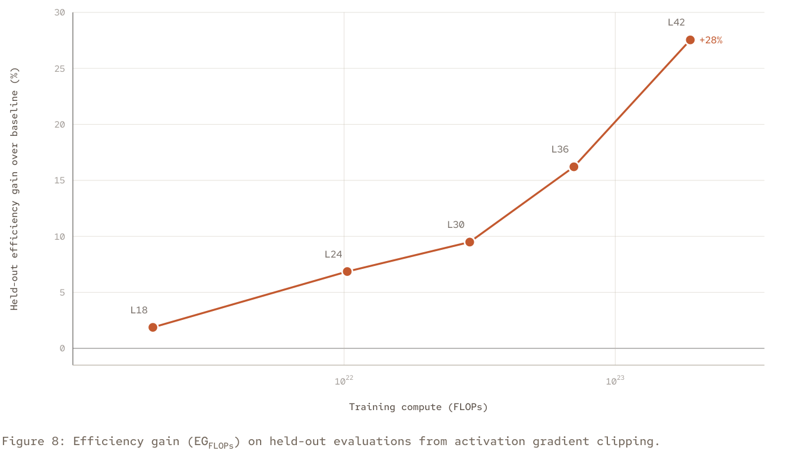
我们还将激活 gradient 裁剪作为验证训练数据的诊断工具。图 9 展示了通过激活 gradient 裁剪识别出的一个格式异常的训练样本。在代码数据中的一个 pull request 里，一段许可证头部在句子中间突然被截断。回溯这个被裁剪的样本，揭示了我们预处理流程中的一个 bug，目前已修复。
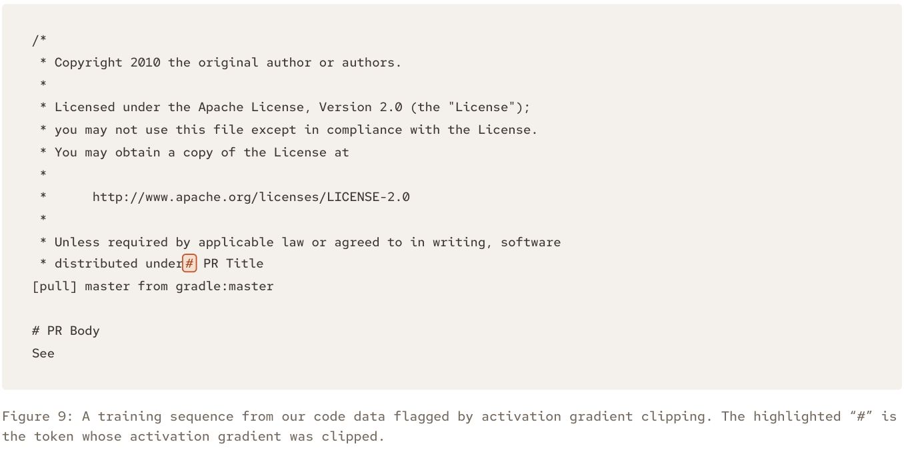
扩大数据规模
MAI-Base-2 遵循与 MAI-Base-1 相同的数据原则：通往前沿性能的道路建立在自然产生的数据之上，而不是从其他模型进行蒸馏。对自有数据处理流程的投入持续带来回报，我们在内部处理了每一个训练 token。以独立训练 token 数衡量，我们的语料库从 MAI-Base-1 到 MAI-Base-2 增长了约 36%（见图 10）。
自 MAI-Thinking-1 以来，我们改进了质量分类、主题分桶、网页解析、去重和评测去污染。针对 MAI-Base-2，我们扩展了处理流程，以处理大幅增加的网页内容1，知识截止日期为 2026 年 3 月。我们还使用基于 embedding 的多样性采样，优先选择新颖数据，减少重复内容。我们的实验表明，这些方法显著改善了模型性能。
与 MAI-Base-1 不同，MAI-Base-2 使用无编码器的 VLM 架构，以原生视觉方式进行预训练。因此，我们在扩充 VLM 语料库方面投入了大量资源，涵盖图文对以及图文交错文档。语料库覆盖的任务包括网页图片描述、图表理解、视觉定位、空间推理、医学理解、计算机使用、乐谱阅读，以及我们预计会对用户有用的其他领域。我们的 VLM 语料库包含 4.5T 独立 token；计入重复使用后，VLM 数据占 50T-token 训练混合数据的 18%。
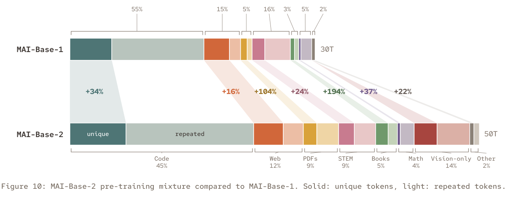
下一步
MAI-Base-2 是我们下一代模型的基础，我们很期待不久后分享更多信息。在 MAI-Base-2 进行后训练的同时，MAI-Base-3 的准备工作已经展开。我们的所有模型都遵循自 MAI-Base-1 以来一直指引我们的相同原则：
- 智能应当从第一性原理中学习。
- 简单的方法最适合规模扩展。
- 重视科学严谨性，而非捷径。
我们坚信，这些原则将使我们持续向前沿扩展。训练前沿 AI，需要建模、数据和基础设施领域的研究人员与工程师作为一个团队共同努力。如果这对你有吸引力，我们正在招聘！
1 对于网页数据，我们使用专有爬虫，遵守 Robots Exclusion Protocol（robots.txt）以及相关的 meta 标签和 HTML 控制，使网站所有者能够管理其网站内容的访问和使用方式。我们还排除违反 Microsoft 负责任 AI 政策，或列入美国贸易代表办公室（USTR）恶名市场名单的来源。